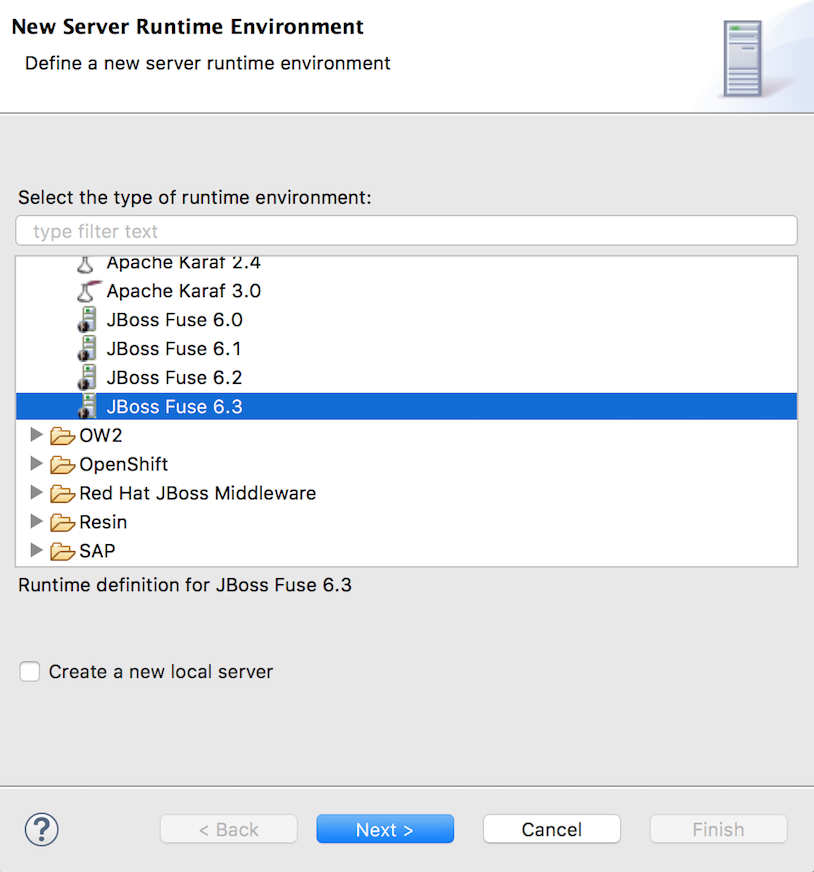
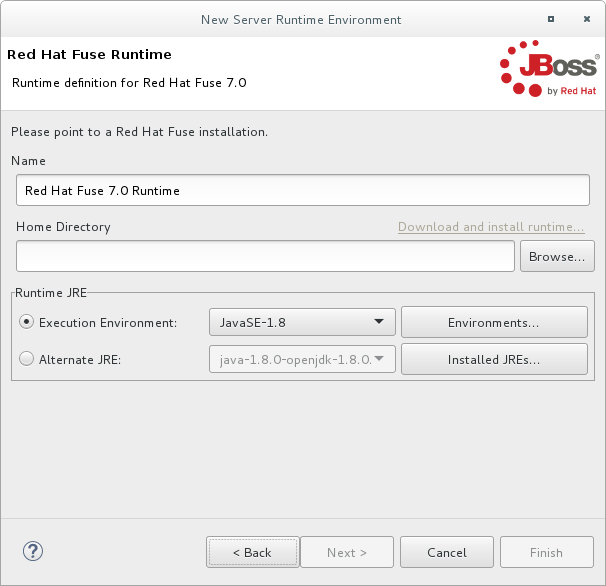
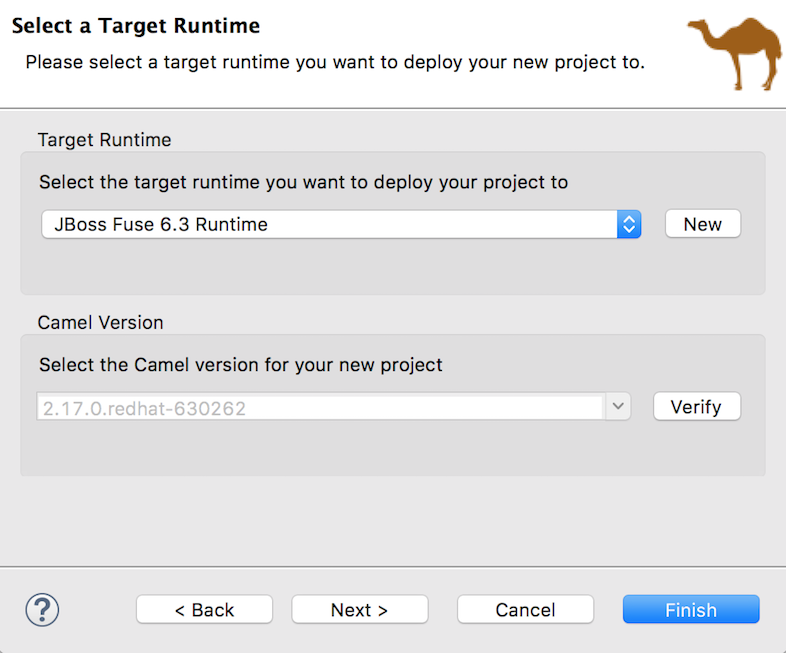
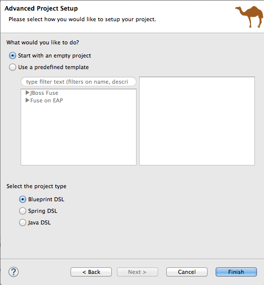
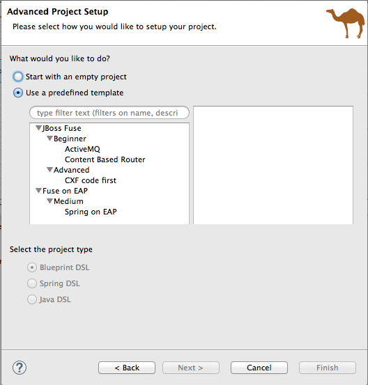
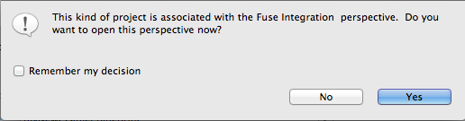
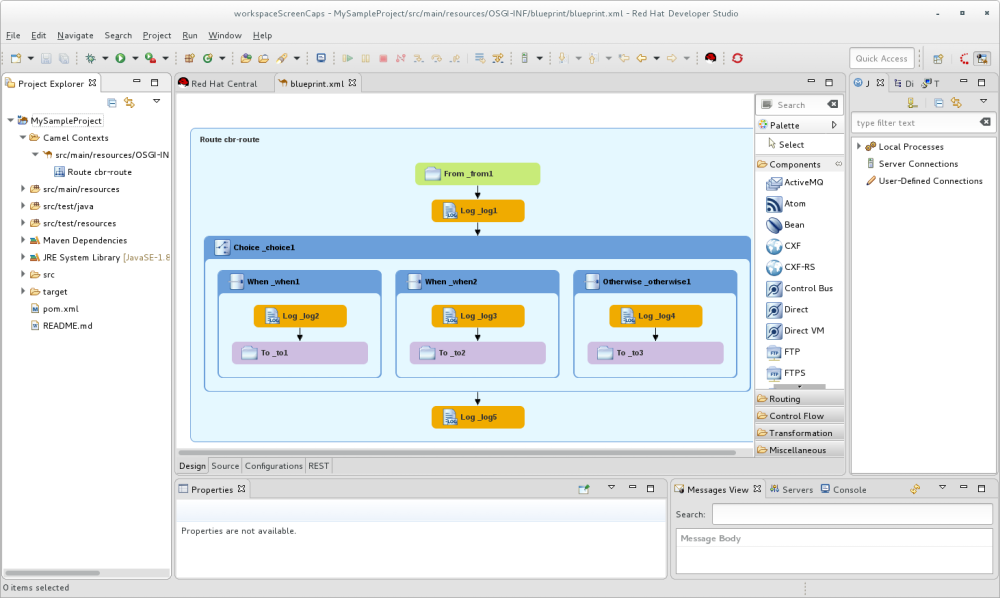
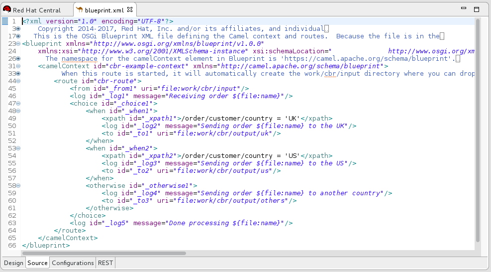

Creating a new Fuse Integration project involves three steps.
Creating a new target runtime or selecting an existing target runtime or Camel version on which to base the project
Once the project has been configured, the tooling configures all of the required Maven dependencies and creates the POM file needed to run and publish the project. The preconfigured templates, based on common use cases, also provide sample code and data to get you started quickly.
Select > > > > to open the New Fuse Integration Project wizard:
The wizard opens with the Use default workspace location option selected in the Location pane.
In Project Name, enter a name for the new project.
Specify the workspace location where the data for the project will be stored.
To use the default workspace leave Use default workspace location enabled.
To use an alternative location clear Use default workspace location and specify a new location in the Path field.
Click to quickly find and select the alternate workspace.
Click to open the Select a Target Runtime page:
You can base you new Fuse Integration project on either a target runtime or on a specific version of Camel.
Target Runtime—Specify the runtime to which you want to publish the new project.
You can either select an existing configured runtime from the drop-down menu, or create a new one.
In either case, the Camel Version pane displays the Camel version associated with the runtime once it is selected.
Camel Version—You can specify the Camel version on which to base the new project, without creating or selecting a target runtime. The tooling supports only the options available from the drop-down list.
![[Important]](imagesdb/important.png)
Important Camel version
2.18.1.redhat-000012works only with Fuse Integration Services projects (for details, see Getting Started with Fuse Integration Services). For Fuse Integration projects, select one of the other available Camel versions.![[Note]](imagesdb/note.png)
Note If you select an existing, configured target runtime or a specific Camel version on which to base your new Fuse Integration project, you need only set the project's advanced options (See Setting advanced project options. Otherwise, you need to create a new target runtime before you set the project's advanced options (see Creating a new target runtime).
With the Select a Target Runtime page open:
In the Target Runtime pane, click the button to open the New server runtime environment page:
Scroll up to and expand the JBoss Fuse folder, and then select a JBoss Fuse runtime environment (for example
JBoss Fuse 6.3).Leave the Create a new local server option disabled. You can create the local server later when you are ready to publish your project to it (for details, seeAdding a Server).
Note If you click the Create a new local server option, the New Fuse Integration Project wizard walks you through additional steps to define and configure the new JBoss Fuse 6.3 server runtime (as described in Adding a Server). Then, when it builds the project, it also adds the server runtime to the Servers panel in Fuse Integration perspective.
Click to open the server's Runtime Definition page:
Specify the Name, Home Directory, and Execution Environment of the server runtime:
Name—accept the default, or enter a new name for the runtime environment
Home Directory—click the button to locate and select the server runtime's installation directory
Note If the server is not already installed on your machine, you can install it now by clicking the link Download and install runtime... and following the site's download instructions. Depending on the site, you may be required to provide valid credentials before you can continue the download process.
Execution Environment—accept the default, or select another JavaSE version from the drop-down menu
If the version you want does not appear on the list, click the button and select the version from that list. The JRE version you select must be installed on your machine.
Note JBoss Fuse 6.3 requires either JRE version 1.8 (recommended) or 1.7.
Alternate JRE—Leave as is
Important If you need to modify the configuration of an existing target runtime, you do so by selecting, from the menu bar, > > > > to open the Server Runtime Environments page. (On Linux and Windows machines, you access through the menu.) In the Name pane, select the runtime you want to modify, and click to open the server's Runtime Definition page. You can change the Name of the target runtime, its Home Directory, and its Execution Environment.
Click to return to the Select a Target Runtime page:
The newly configured target runtime appears in the Target Runtime pane's drop-down menu, and the Camel version supported by the runtime appears in the Camel Version pane, grayed out.
To finish, set the advanced project options as described in Setting advanced project options.
With the completed Select a Target Runtime page open:
Click to open the Advanced Project Setup page.
You can create an empty project, which creates a skeleton Camel context routing file based on one of the three supported Domain Specific Languages (DSLs), or you can use a predefined template, each of which is based on a common use case. Individual templates may not support all DSL options.
Note For Java DSL, the tooling generates a
CamelRoute.javafile that you can edit in the tooling's Java editor, but it does not generate a graphical representation of it in Diagram view.Start with an empty project:
For an empty project, all DSL options are available.
Use a predefined template:
The options are:
ActiveMQ—Provides a sample Camel route that reads files from a specific location and routes them to a message queue. Another route, implementing a content-based router, pulls the messages off the queue and routes each to its target destination, according to message content.Note Before you can deploy this project, you must create, in your Red Hat JBoss Fuse installation, a pid file that configures the ActiveMQ connection properties. For details, open the
ReadMe.txtfile, listed under the project root in Project Explorer.This template creates a project that runs on Red Hat JBoss Fuse servers, and it supports the Blueprint and Spring DSLs only.
Content Based Router—Provides a sample Camel route that reads files from a specific location and routes them to different output folders according to message content.This template creates a project that runs on Red Hat JBoss Fuse servers, and it supports all three of the supported DSLs.
Spring on EAP—Provides a sample Camel route that calls into a bean service to say Hello.This template creates a project that runs on Red Hat EAP 6.4 servers, and it supports the Spring DSL only.
SpringBoot on Openshift—Demonstrates how to configure Camel routes in Spring Boot using a Spring XML configuration file. This template creates a Fuse Integration Services project and requires Camel version2.18.1.redhat-000010.This template creates a project that runs on OpenShift servers, and it supports the Spring DSL only. For details on using this template, see Getting Started with Fuse Integration Services
Select one of the project setup options and a DSL (as available), and then click .
The tooling starts building the project, adding it to Project Explorer.
If you are not already in Fuse Integration perspective, the tooling asks whether you want to switch to it now:
Click to open the new project in Fuse Integration perspective:
 In this example, the
CBRrouteproject appears in Project Explorer.CBRroutewould have been the name entered in the Project Name field in Step 2.Click the Source tab at the bottom of the canvas to see the generated Camel context file:

You may encounter Maven dependency errors after you create a new Fuse Integration project.
Though it can happen at other times, it more typically occurs when a project build is canceled before the process has finished. Interrupting the process in this way often prevents all of the project's dependencies from downloading from the Maven repositories, which can take some time.
You can often resolve these dependency errors by updating Maven dependencies this way:
In Project Explorer, select the root project just created.
Right-click it to open the context menu.
Select >
In the Update Maven Project wizard:
Select the project you want to update, if more than one appears in the wizard's list.
Click the Force Update of Snapshots/Releases option to enable it.
Click OK.
In the bottom, right corner of the workbench, you may see the progress status bar churning as missing dependencies are downloaded from the Maven repositories.
| Red Hat JBoss Fuse Tooling Tutorials, To Create a New Route |